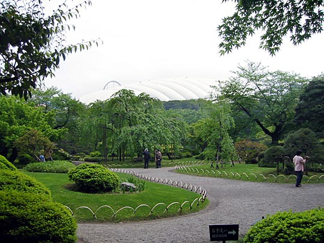

Photos from our second trip to Japan, 18 March–2 April 2005 are on Flickr
Japan, 18-28 April 2003
- Index
- Arrival, Day 1: Tsukiji Fish Market; Hama-Rikyu Gardens [1.66Mb]
- Day 1 (continued): DesignFesta [1.25Mb]
- Day 2: Meiji Shrine and inner garden; Harajuku; Nezu Institute; Aoyama cemetery [2.38Mb]
- Day 3: Ghibli Museum, Mitaka; Shinjuku [1.66Mb]
- Day 4: Hakone: Taisekan ryokan [1.81Mb]
- Day 5: Hakone: Taisekan; Hakone Museum of Art; ropeway to Owakudani; Lake Ashino-ko [1.93Mb]
- Day 6: Kamakura [4.37Mb]
- Day 7: Senso-ji temple; Asakusa; Joe [1.46Mb]
- Day 8: Koishikawa Korakuen garden; Seibu department store; Ginza [1.2Mb]
- Day 9: Shinjuku-gyoen gardens [2Mb]
- Day 9 (continued): Harajuku, Ueno Park and the Tokyo National Museum, Roppongi Hills [1.59Mb]
Saturday 26 April: Koishikawa Korakuen garden; Seibu department store, Ikebukuro; Ginza
Didn't find time to write on the day, so this is from memory.
Travelled quite far to Koishikawa Korakuen gardens, highly rated by guidebooks. It turns out to be adjacent to the Tokyo Dome baseball stadium, looking like a giant egg. People queueing outside for tickets who've obviously been there a long time. Sitting on little mats, playing Gameboys, etc. Also towering above the station, the biggest rollercoaster I've ever seen.
The entrance to the gardens is on the opposite corner to the station, so we had to walk all the way round first.
Koishikawa Korakuen [sign at the entrance]
Area: 17.5 Acres
The Koishikawa Korakuen was first laid out in 1629 by Tokugawa Yorifusa, but its construction was completed by his successor Mitsukuni, an enlightened lord of the Tokugawa family of Mito, with the assistance of Zhu Shun Shui (1600-1682), a refugee scholar from the Ming Dynasty of China, who came under the lord's protection.
Originally, the area of the garden was 63 acres, but it was reduced to one-fourth owing to a city-planning of Tokyo, and the remaining area was placed under the control of the former Army Arsenal after the Meiji Restoration.
It was designated by the Cultural Property Protection Committee as an important special place of scenic and historic interest, and was turned over the the Tokyo Metropolitan Government for management in 1936. Korakuen is the oldest of all the gardens in Tokyo and it is a typical stroll-garden built in early days of the Tokugawa Era.
In the central part of Korakuen there is a placid lakelet with winding walks running around, stone lanterns, trees and arched bridges arranged skillfully in harmony with their surroundings.
Miniature views imitating noted Japanese and Chinese scenic spots such as Xihu and Lushan in China are presented, which please the eyes of the visitors
Koishikawa Korakuen gardens
The inner garden lakelet with its little arched bridges and gnarled pines. You're not allowed to walk on bridges, or on the island, unfortunately. Each bridge is made of a single piece of carved stone, dovetailing perfectly into stone supports on each side. Tokyo Dome in the background.
Koishikawa Korakuen gardens

The garden's entrance, with Tokyo Dome fading into the white sky behind. Like the day at Hama-Rikyu, the hazy weather tended to bleach out the colours in the photos.
Looking in the opposite direction over the large pond. More picturesque islands. Lots of carp in the water.
Sawatari stepping stones
A crow above us
Wisteria trellis, plum trees, and zig-zag bridge winding through the iris garden. To the right of the iris garden is a rice paddy, which was originally made by Mistukuni with the intention to teach his heir's wife about the hardship of farmers.
Yatsu-hashi bridge in 8 segments
Hitotsumatsu pine. Look at all the supports under the branches — this tree has been literally sculpted over a 100 years or more into an Oriental ideal
Roller-coaster and ferris wheel above the station, adjacent to the Tokyo Dome
Seibu department store
See special collection: Food
 Near the front of the store was a stall with a loud, non-stop sales pitch over PA, surrounded by people, doing brisk business. We saw they were selling green tea leaves, scooping it into sachets right there. We assumed it was some kind of special offer, and as we were still planning to buy green tea, we joined the queue. Fortunately the sales lady, quoting the price to us, also explained what the fuss was about — "new leaf". Every year, I recall reading in guidebooks, a big fuss is made of the new season green tea.
Near the front of the store was a stall with a loud, non-stop sales pitch over PA, surrounded by people, doing brisk business. We saw they were selling green tea leaves, scooping it into sachets right there. We assumed it was some kind of special offer, and as we were still planning to buy green tea, we joined the queue. Fortunately the sales lady, quoting the price to us, also explained what the fuss was about — "new leaf". Every year, I recall reading in guidebooks, a big fuss is made of the new season green tea.
Ginza
Very posh neighbourhood, but not the same youth culture vibe as Harajuku or Shibuya. Older crowd, but very expensively dressed. Lots of glitzy corporate offices too. Went to the Sony Centre, which was amusing for a while. Standouts were probably the incredibly big flat-screen TVs. Not plasma-screen technology, still CRT apparently. Don't really know how they do it. Lots of sexy Vaio PCs on display. Desktop PCs all the slimline entertainment-centric configurations. Watched the Playstation games for a bit — the one using drums as input device was very popular, and seems like a good idea (if maddening to have in the house). That also seems to be the niche for arcade games at the moment — input methods that go beyond the joystick, delivering experiences the consoles can't. Dancing games, shooting, driving, drumming, etc.
We were too tired at this point to really enjoy ourselves looking around, or go to many of the places we had written down. We were planning to have a rest in the World Magazine Gallery, but it was closed. So we just had a tempura lunch, and headed back to Shibuya. One thing that was nice was that, being Saturday, some of the big streets were pedestrianised and had a nice relaxed atmosphere as a result.
Wide roads, lots of neon and impressive buildings, expensively-dressed people
The imposing Kabuki theatre
 Tempura lunch (this is what we had, but the photo is of models in the window)
Tempura lunch (this is what we had, but the photo is of models in the window)
Back in Shibuya that evening
We did a lot of shopping that we wanted to do in Shibuya, and just walking around the area, people-watching, is great. We got a ton of things at the 100-Yen plaza.
The highlight of the evening for me was spending nearly 2 hours in Mandarake (while Kelly went to Tower Records), the enormous basement 2nd-hand manga store. Browsing randomly pretty frustrating, besides finding the "art book" section, coffee-table books centered around anime productions, including a big Studio Ghibli selection. But I had more luck getting the very helpful staff to find particular authors for me that I had seen in last year's manga exhibition at the London Institute, and publications I had read about in Fred Schodt's books. More details under loot.
Also plenty of anime cel art for sale, Studio Ghibli typically going for almost 10 times the price of others.
Tower Records. Like all over Tokyo, massive Harry Potter promotions.
I only realised after seeing the photo I was standing outside a specialty condom store
From the Mark Centre mall, the Hachiko Square intersection at Shibuya, teeming with people. The Buddha image at left is on a building-sized video screen, curving around the building. Below that is the Starbucks where we sat on Tuesday.
Next morning — crows eating garbage
Next: Day 9: Shinjuku-Gyoen gardens